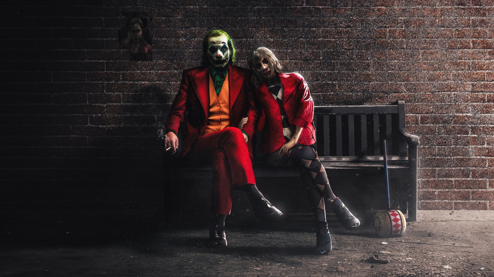

|  |
A "Joker: Kétszemélyes téboly" (Joker 2) című film 2024-ben debütált, és számos pozitív visszajelzést kapott a filmes szakma és a közönség részéről. Quentin Tarantino például kiemelte, hogy a film rendkívül magával ragadó volt számára, különösen a zenés jeleneteket emelte ki, amelyek mély hatással voltak rá. Lady Gaga Harley Quinn megformálásával új dimenziót adott a karakternek |
| Rendező | Todd Phollops |
| Producer | Emma Tillinger, Todd Phillips |
| Műfaj | Dráma, thriller |
| Forgatókönyv | Todd Phillips, Scott Silver |
| Főszerepben | Joaquin Phoenix, Lady Gaga |
| Zene | Hildur Guonadottir |